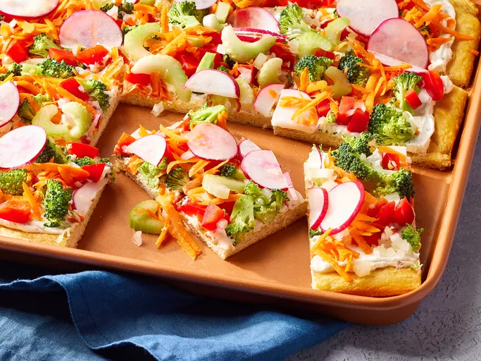

PIZZA

Ingredients
2 (8 oz) packages crescent rolls
1 package cream cheese, softened
1 package ranch seasoning mix
1 1/2 cups chopped fresh broccoli
1/2 cup halved and thinly sliced radishes
Steps
Gather all ingredients. Preheat oven to 350 degrees F
Spray a pan with nonstick oil
Press crescent roll dough into the prepared pan to form a crust
Bake in the preheated oven until dough is fully cooked
Combine sour cream, cream cheese, ranch seasoning, dill and garlic salt in a medium mixing bowl
Add all vegetables on top of the pizza